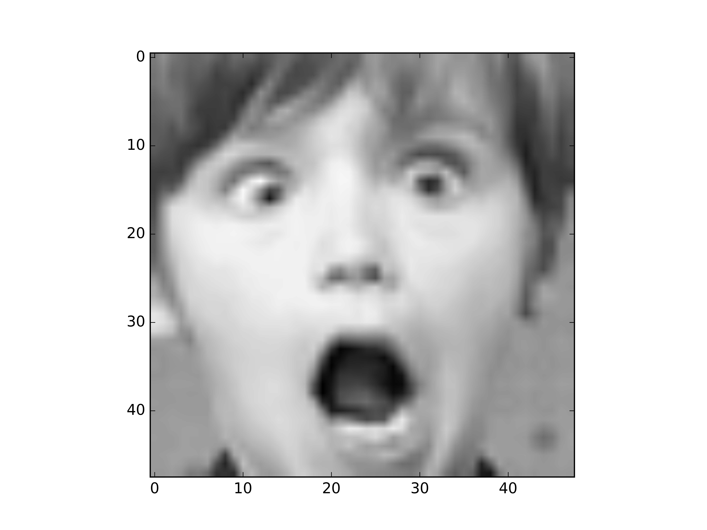
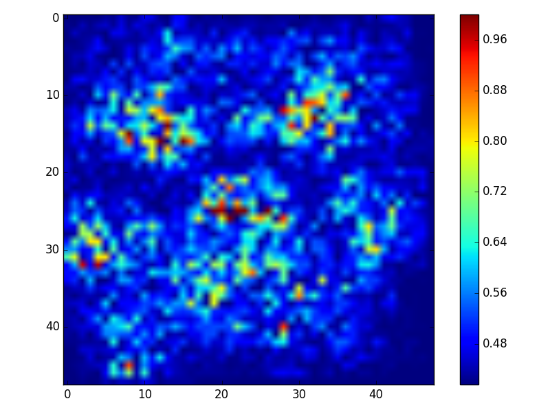
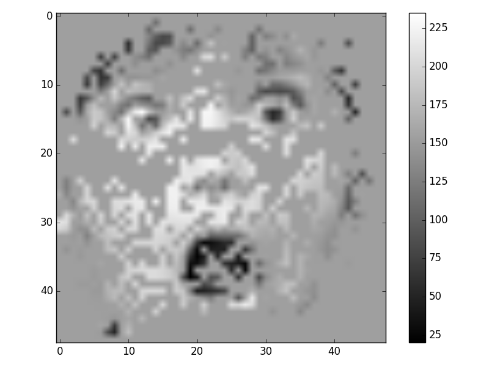

# Problem 4: Analyze the Model by Plotting the Saliency Map
Problem Description:
* Given an image and its corresponding class, we would like to rank the pixels of original image based on their influence on the distribution of final output
* Use your trained CNN, get the gradient of input image and plot it, or you can use the other method mentioned in class to plot the saliency map
## 範例
* **[Note] 請不要直接使用助教的圖來當成作業交上來**
* **[Note] 請不要使用這張範例圖**

#### Heatmap
<center>原圖</center>| <center> Saliency Map</center> | <center>Mask掉heat小的部份</center>
:-------------------------:|:-------------------------:|:------------------------:
||
## TA hour
<i class="fa fa-diamond"></i> Keywords: `keras.backend`, `gradients`
<div class="highlight"><pre><span></span><span class="ch">#!/usr/bin/env python</span>
<span class="c1"># -*- coding: utf-8 -*-</span>
<span class="kn">import</span> <span class="nn">os</span>
<span class="kn">import</span> <span class="nn">argparse</span>
<span class="kn">from</span> <span class="nn">keras.models</span> <span class="kn">import</span> <span class="n">load\_model</span>
<span class="kn">from</span> <span class="nn">termcolor</span> <span class="kn">import</span> <span class="n">colored</span><span class="p">,</span><span class="n">cprint</span>
<span class="kn">import</span> <span class="nn">keras.backend</span> <span class="kn">as</span> <span class="nn">K</span>
<span class="kn">from</span> <span class="nn">utils</span> <span class="kn">import</span> <span class="o">*</span>
<span class="kn">import</span> <span class="nn">numpy</span> <span class="kn">as</span> <span class="nn">np</span>
<span class="kn">import</span> <span class="nn">matplotlib.pyplot</span> <span class="kn">as</span> <span class="nn">plt</span>
<span class="n">base\_dir</span> <span class="o">=</span> <span class="n">os</span><span class="o">.</span><span class="n">path</span><span class="o">.</span><span class="n">dirname</span><span class="p">(</span><span class="n">os</span><span class="o">.</span><span class="n">path</span><span class="o">.</span><span class="n">dirname</span><span class="p">(</span><span class="n">os</span><span class="o">.</span><span class="n">path</span><span class="o">.</span><span class="n">realpath</span><span class="p">(</span><span class="vm">\_\_file\_\_</span><span class="p">)))</span>
<span class="n">img\_dir</span> <span class="o">=</span> <span class="n">os</span><span class="o">.</span><span class="n">path</span><span class="o">.</span><span class="n">join</span><span class="p">(</span><span class="n">base\_dir</span><span class="p">,</span> <span class="s1">&#39;image&#39;</span><span class="p">)</span>
<span class="k">if</span> <span class="ow">not</span> <span class="n">os</span><span class="o">.</span><span class="n">path</span><span class="o">.</span><span class="n">exists</span><span class="p">(</span><span class="n">img\_dir</span><span class="p">):</span>
<span class="n">os</span><span class="o">.</span><span class="n">makedirs</span><span class="p">(</span><span class="n">img\_dir</span><span class="p">)</span>
<span class="n">cmap\_dir</span> <span class="o">=</span> <span class="n">os</span><span class="o">.</span><span class="n">path</span><span class="o">.</span><span class="n">join</span><span class="p">(</span><span class="n">img\_dir</span><span class="p">,</span> <span class="s1">&#39;cmap&#39;</span><span class="p">)</span>
<span class="k">if</span> <span class="ow">not</span> <span class="n">os</span><span class="o">.</span><span class="n">path</span><span class="o">.</span><span class="n">exists</span><span class="p">(</span><span class="n">cmap\_dir</span><span class="p">):</span>
<span class="n">os</span><span class="o">.</span><span class="n">makedirs</span><span class="p">(</span><span class="n">cmap\_dir</span><span class="p">)</span>
<span class="n">partial\_see\_dir</span> <span class="o">=</span> <span class="n">os</span><span class="o">.</span><span class="n">path</span><span class="o">.</span><span class="n">join</span><span class="p">(</span><span class="n">img\_dir</span><span class="p">,</span><span class="s1">&#39;partial\_see&#39;</span><span class="p">)</span>
<span class="k">if</span> <span class="ow">not</span> <span class="n">os</span><span class="o">.</span><span class="n">path</span><span class="o">.</span><span class="n">exists</span><span class="p">(</span><span class="n">partial\_see\_dir</span><span class="p">):</span>
<span class="n">os</span><span class="o">.</span><span class="n">makedirs</span><span class="p">(</span><span class="n">partial\_see\_dir</span><span class="p">)</span>
<span class="n">model\_dir</span> <span class="o">=</span> <span class="n">os</span><span class="o">.</span><span class="n">path</span><span class="o">.</span><span class="n">join</span><span class="p">(</span><span class="n">base\_dir</span><span class="p">,</span> <span class="s1">&#39;model&#39;</span><span class="p">)</span>
<span class="k">def</span> <span class="nf">main</span><span class="p">():</span>
<span class="n">parser</span> <span class="o">=</span> <span class="n">argparse</span><span class="o">.</span><span class="n">ArgumentParser</span><span class="p">(</span><span class="n">prog</span><span class="o">=</span><span class="s1">&#39;plot\_saliency.py&#39;</span><span class="p">,</span>
<span class="n">description</span><span class="o">=</span><span class="s1">&#39;ML-Assignment3 visualize attention heat map.&#39;</span><span class="p">)</span>
<span class="n">parser</span><span class="o">.</span><span class="n">add\_argument</span><span class="p">(</span><span class="s1">&#39;--epoch&#39;</span><span class="p">,</span> <span class="nb">type</span><span class="o">=</span><span class="nb">int</span><span class="p">,</span> <span class="n">metavar</span><span class="o">=</span><span class="s1">&#39;&lt;#epoch&gt;&#39;</span><span class="p">,</span> <span class="n">default</span><span class="o">=</span><span class="mi">80</span><span class="p">)</span>
<span class="n">args</span> <span class="o">=</span> <span class="n">parser</span><span class="o">.</span><span class="n">parse\_args</span><span class="p">()</span>
<span class="n">model\_name</span> <span class="o">=</span> <span class="s2">&quot;model-</span><span class="si">%s</span><span class="s2">.h5&quot;</span> <span class="o">%</span><span class="nb">str</span><span class="p">(</span><span class="n">args</span><span class="o">.</span><span class="n">epoch</span><span class="p">)</span>
<span class="n">model\_path</span> <span class="o">=</span> <span class="n">os</span><span class="o">.</span><span class="n">path</span><span class="o">.</span><span class="n">join</span><span class="p">(</span><span class="n">model\_dir</span><span class="p">,</span> <span class="n">model\_name</span><span class="p">)</span>
<span class="n">emotion\_classifier</span> <span class="o">=</span> <span class="n">load\_model</span><span class="p">(</span><span class="n">model\_path</span><span class="p">)</span>
<span class="k">print</span><span class="p">(</span><span class="n">colored</span><span class="p">(</span><span class="s2">&quot;Loaded model from {}&quot;</span><span class="o">.</span><span class="n">format</span><span class="p">(</span><span class="n">model\_name</span><span class="p">),</span> <span class="s1">&#39;yellow&#39;</span><span class="p">,</span> <span class="n">attrs</span><span class="o">=</span><span class="p">[</span><span class="s1">&#39;bold&#39;</span><span class="p">]))</span>
<span class="n">private\_pixels</span> <span class="o">=</span> <span class="n">load\_pickle</span><span class="p">(</span><span class="s1">&#39;../fer2013/privateTest\_pixels.pkl&#39;</span><span class="p">)</span>
<span class="n">private\_pixels</span> <span class="o">=</span> <span class="p">[</span> <span class="n">np</span><span class="o">.</span><span class="n">fromstring</span><span class="p">(</span><span class="n">private\_pixels</span><span class="p">[</span><span class="n">i</span><span class="p">],</span> <span class="n">dtype</span><span class="o">=</span><span class="nb">float</span><span class="p">,</span> <span class="n">sep</span><span class="o">=</span><span class="s1">&#39; &#39;</span><span class="p">)</span><span class="o">.</span><span class="n">reshape</span><span class="p">((</span><span class="mi">1</span><span class="p">,</span> <span class="mi">48</span><span class="p">,</span> <span class="mi">48</span><span class="p">,</span> <span class="mi">1</span><span class="p">))</span>
<span class="k">for</span> <span class="n">i</span> <span class="ow">in</span> <span class="nb">range</span><span class="p">(</span><span class="nb">len</span><span class="p">(</span><span class="n">private\_pixels</span><span class="p">))</span> <span class="p">]</span>
<span class="n">input\_img</span> <span class="o">=</span> <span class="n">emotion\_classifier</span><span class="o">.</span><span class="n">input</span>
<span class="n">img\_ids</span> <span class="o">=</span> <span class="p">[</span><span class="s2">&quot;image ids from which you want to make heatmaps&quot;</span><span class="p">]</span>
<span class="k">for</span> <span class="n">idx</span> <span class="ow">in</span> <span class="n">img\_ids</span><span class="p">:</span>
<span class="n">val\_proba</span> <span class="o">=</span> <span class="n">emotion\_classifier</span><span class="o">.</span><span class="n">predict</span><span class="p">(</span><span class="n">private\_pixels</span><span class="p">[</span><span class="n">idx</span><span class="p">])</span>
<span class="n">pred</span> <span class="o">=</span> <span class="n">val\_proba</span><span class="o">.</span><span class="n">argmax</span><span class="p">(</span><span class="n">axis</span><span class="o">=-</span><span class="mi">1</span><span class="p">)</span>
<span class="n">target</span> <span class="o">=</span> <span class="n">K</span><span class="o">.</span><span class="n">mean</span><span class="p">(</span><span class="n">emotion\_classifier</span><span class="o">.</span><span class="n">output</span><span class="p">[:,</span> <span class="n">pred</span><span class="p">])</span>
<span class="n">grads</span> <span class="o">=</span> <span class="n">K</span><span class="o">.</span><span class="n">gradients</span><span class="p">(</span><span class="n">target</span><span class="p">,</span> <span class="n">input\_img</span><span class="p">)[</span><span class="mi">0</span><span class="p">]</span>
<span class="n">fn</span> <span class="o">=</span> <span class="n">K</span><span class="o">.</span><span class="n">function</span><span class="p">([</span><span class="n">input\_img</span><span class="p">,</span> <span class="n">K</span><span class="o">.</span><span class="n">learning\_phase</span><span class="p">()],</span> <span class="p">[</span><span class="n">grads</span><span class="p">])</span>
<span class="n">heatmap</span> <span class="o">=</span> <span class="bp">None</span>
<span class="sd">&#39;&#39;&#39;</span>
<span class="sd"> Implement your heatmap processing here!</span>
<span class="sd"> hint: Do some normalization or smoothening on grads</span>
<span class="sd"> &#39;&#39;&#39;</span>
<span class="n">thres</span> <span class="o">=</span> <span class="mf">0.5</span>
<span class="n">see</span> <span class="o">=</span> <span class="n">private\_pixels</span><span class="p">[</span><span class="n">idx</span><span class="p">]</span><span class="o">.</span><span class="n">reshape</span><span class="p">(</span><span class="mi">48</span><span class="p">,</span> <span class="mi">48</span><span class="p">)</span>
<span class="n">see</span><span class="p">[</span><span class="n">np</span><span class="o">.</span><span class="n">where</span><span class="p">(</span><span class="n">heatmap</span> <span class="o">&lt;=</span> <span class="n">thres</span><span class="p">)]</span> <span class="o">=</span> <span class="n">np</span><span class="o">.</span><span class="n">mean</span><span class="p">(</span><span class="n">see</span><span class="p">)</span>
<span class="n">plt</span><span class="o">.</span><span class="n">figure</span><span class="p">()</span>
<span class="n">plt</span><span class="o">.</span><span class="n">imshow</span><span class="p">(</span><span class="n">heatmap</span><span class="p">,</span> <span class="n">cmap</span><span class="o">=</span><span class="n">plt</span><span class="o">.</span><span class="n">cm</span><span class="o">.</span><span class="n">jet</span><span class="p">)</span>
<span class="n">plt</span><span class="o">.</span><span class="n">colorbar</span><span class="p">()</span>
<span class="n">plt</span><span class="o">.</span><span class="n">tight\_layout</span><span class="p">()</span>
<span class="n">fig</span> <span class="o">=</span> <span class="n">plt</span><span class="o">.</span><span class="n">gcf</span><span class="p">()</span>
<span class="n">plt</span><span class="o">.</span><span class="n">draw</span><span class="p">()</span>
<span class="n">fig</span><span class="o">.</span><span class="n">savefig</span><span class="p">(</span><span class="n">os</span><span class="o">.</span><span class="n">path</span><span class="o">.</span><span class="n">join</span><span class="p">(</span><span class="n">cmap\_dir</span><span class="p">,</span> <span class="s1">&#39;privateTest&#39;</span><span class="p">,</span> <span class="s1">&#39;{}.png&#39;</span><span class="o">.</span><span class="n">format</span><span class="p">(</span><span class="n">idx</span><span class="p">)),</span> <span class="n">dpi</span><span class="o">=</span><span class="mi">100</span><span class="p">)</span>
<span class="n">plt</span><span class="o">.</span><span class="n">figure</span><span class="p">()</span>
<span class="n">plt</span><span class="o">.</span><span class="n">imshow</span><span class="p">(</span><span class="n">see</span><span class="p">,</span><span class="n">cmap</span><span class="o">=</span><span class="s1">&#39;gray&#39;</span><span class="p">)</span>
<span class="n">plt</span><span class="o">.</span><span class="n">colorbar</span><span class="p">()</span>
<span class="n">plt</span><span class="o">.</span><span class="n">tight\_layout</span><span class="p">()</span>
<span class="n">fig</span> <span class="o">=</span> <span class="n">plt</span><span class="o">.</span><span class="n">gcf</span><span class="p">()</span>
<span class="n">plt</span><span class="o">.</span><span class="n">draw</span><span class="p">()</span>
<span class="n">fig</span><span class="o">.</span><span class="n">savefig</span><span class="p">(</span><span class="n">os</span><span class="o">.</span><span class="n">path</span><span class="o">.</span><span class="n">join</span><span class="p">(</span><span class="n">partial\_see\_dir</span><span class="p">,</span> <span class="s1">&#39;privateTest&#39;</span><span class="p">,</span> <span class="s1">&#39;{}.png&#39;</span><span class="o">.</span><span class="n">format</span><span class="p">(</span><span class="n">idx</span><span class="p">)),</span> <span class="n">dpi</span><span class="o">=</span><span class="mi">100</span><span class="p">)</span>
<span class="k">if</span> <span class="vm">\_\_name\_\_</span> <span class="o">==</span> <span class="s2">&quot;\_\_main\_\_&quot;</span><span class="p">:</span>
<span class="n">main</span><span class="p">()</span>
</pre></div>
## Reference
→ [Deep Inside CNN: Visualizing Image Classification Models and Saliency Maps](https://arxiv.org/pdf/1312.6034.pdf)